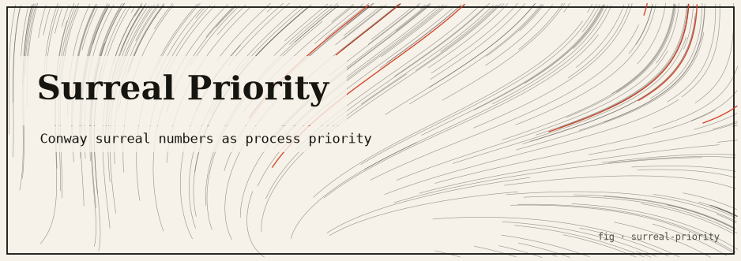

Surreal Priority: Conway’s surreal numbers as a scheduler key
Conway’s surreal numbers as process priorities — 1/ω, every dyadic fraction, and ω on one ordered line, driving a deterministic scheduler. Pure Rust, zero dependencies.

The idea
Integer process priorities are awkward: you cannot represent a task that should always preempt every other task without reserving a magic constant, and there is no natural “idle only” priority below 0. Conway’s surreal numbers solve this by providing a totally-ordered field that contains every finite priority, ω (infinite, beats all finite tasks), and 1/ω (infinitesimal, runs only when nothing else can — yet still strictly positive).
This package represents priorities as p = a·ω + b + c·(1/ω)
where a, b, c are dyadic rationals (n / 2𝑖). All comparisons use exact integer
arithmetic — no floating point. A deterministic scheduler picks the highest-priority
runnable task each tick and demonstrates that an ω-priority task starves all finite tasks,
while a 1/ω-priority task waits for complete idleness.
What are surreal numbers?
Surreal numbers were discovered by mathematician John Conway in the 1970s (and named by Donald
Knuth). They are astonishing because the entire system — every real number, plus quantities
that are infinitely large or infinitely small — is built from a single recursive rule and
literally nothing else. Every surreal number is a pair of sets, written
{ L | R }, where L is a set of previously-created surreal numbers, R is another, and
every element of L is strictly less than every element of R. That is the whole definition.
From this rule the numbers unfold in stages called birthdays. On day 0 the only thing
you can write, using the empty set on both sides, is { | } = 0. On day 1 you get
{ 0 | } = 1 and { | 0 } = −1. Continuing, day 2 produces 2,
−2, and the fraction { 0 | 1 } = 1/2. Every dyadic rational (a fraction
with a power-of-two denominator) appears after finitely many days; the remaining reals such as
π arrive at the first infinite stage. A number’s value is the simplest number lying
strictly between its left and right sets — the one with the earliest birthday.
What makes surreals more than a curiosity is that the construction keeps going past the finite
days. The form ω = { 0, 1, 2, 3, … | } is a number larger than every
natural number — a genuine infinity you can do arithmetic with — and
1/ω = { 0 | 1, 1/2, 1/4, … } is a positive infinitesimal,
smaller than every positive real yet greater than zero. All of these live on one totally ordered
line and form a field: you can add, subtract, multiply, and divide them, and between any
two distinct surreals there is always another (the system is dense). That combination — a
single ordered scale holding the finite, the infinite, and the infinitesimal — is exactly
what makes them attractive as priority keys.
The mathematics
Priority p = a·ω + b + c·(1/ω)
where a, b, c are dyadic rationals n / 2^k (exact integer arithmetic)
Ordering (lexicographic):
p < q iff (a < q.a) or (a == q.a and b < q.b) or
(a == q.a and b == q.b and c < q.c)
Key values:
ω-priority (a=1, b=0, c=0) starves all finite priorities
1/ω priority (a=0, b=0, c=1) loses to every positive finite priority
Standard priorities: a=0, b=integer, c=0
16 passing tests: dyadic arithmetic, surreal ordering, scheduler behaviour
All comparisons: exact integer arithmetic — no float in any path
How it works
#![forbid(unsafe_code)]— fully safe Rust.- Zero external dependencies: dyadic rational arithmetic is implemented from scratch using only integer multiplication and comparison.
- The scheduler is a simple priority queue over
Taskstructs. Each tick it picks the highest-priority runnable task and runs it for one tick. cargo runprints an ordering table (1/ω < 1 < ω < 2ω) and a sample scheduler run showing starvation and idle-only behaviour.
Run it
git clone https://github.com/caelum0x/awesome-mad-projects.git cd surreal-priority cargo test # 16 tests: dyadic arithmetic, ordering, scheduler cargo run # ordering table + sample scheduler run
Priority ordering: 1/ω < 1 < 3/2 < 2 < ω < 2ω Scheduler run (10 ticks): Tick 1: ω-task A (runs) Tick 2: ω-task A (runs — starving finite tasks) ... Tick 8: finite-task B (runs — A complete) Tick 9: 1/ω-task C (runs — all others done)
Surreal number questions
What are surreal numbers?
Surreal numbers are a class of numbers John Conway constructed from a single recursive rule:
every number is a pair { L | R } of sets of earlier-created numbers, with every left
element strictly less than every right element. Starting from nothing, this builds all the real
numbers plus infinitesimals and infinities on one totally ordered line.
What is a surreal number’s birthday?
Surreal numbers are created in stages. The only number born on day 0 is { | } = 0;
each later day introduces numbers definable from those already made. A number’s birthday is
the first day it can appear, and the simplest value between its neighbours — the one with the
earliest birthday — is its canonical form.
Why use surreal numbers as scheduling priorities?
They form a dense, totally ordered field: between any two priorities you can always insert another, and the system natively includes ω (which beats every finite task) and 1/ω (an infinitesimal that runs only when nothing else can). This demo restricts coefficients to dyadic rationals so every comparison stays exact integer arithmetic with no floating point.
Honest caveat: this project does not implement the full surreal-number field.
It models a practical slice — priorities of the form a·ω + b + c·(1/ω)
with dyadic-rational coefficients, compared lexicographically — which captures the useful
“infinite, finite, infinitesimal” ordering without building numbers recursively from
{ L | R } or supporting general surreal multiplication. It is faithful as an ordered
priority key, not as a complete construction of Conway’s numbers.